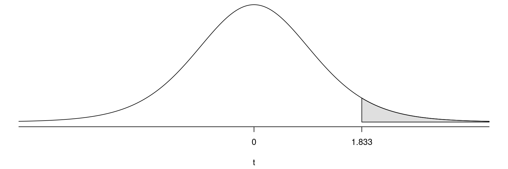
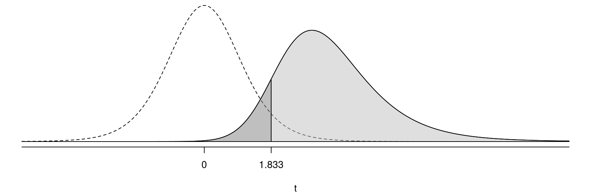
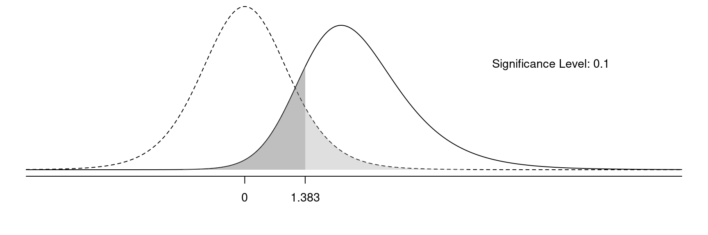
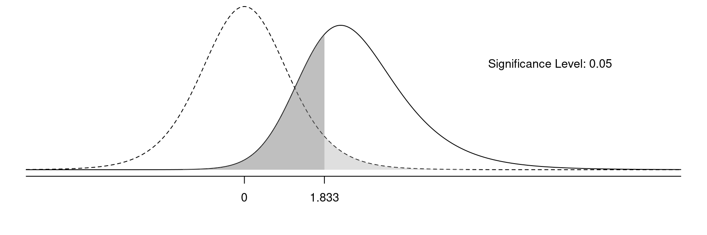
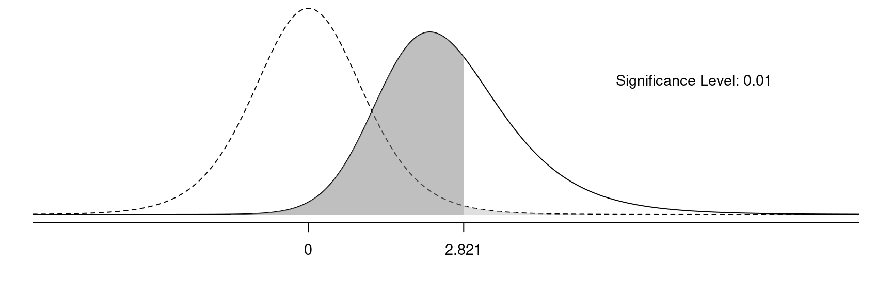

You can also download a PDF copy of this lecture.
| Reality | Do Not Reject \(H_0\) | Reject \(H_0\) |
|---|---|---|
| \(H_0\) true | correct decision | type I error |
| \(H_0\) false | type II error | correct decision |
We have two types of errors:
| Reality | Do Not Reject \(H_0\) | Reject \(H_0\) |
|---|---|---|
| there is no relationship | correctly conclude there is no relationship | incorrectly conclude there is a relationship |
| there is a relationship | incorrectly conclude there is no relationship | correctly conclude there is a relationship |
We rejected \(H_0\). What kind of error might we have made?
Example: Recall the study with the cross-over design that investigated if garlic repels ticks. Suppose the hypotheses are \(H_0\!: p = 0.5\) (garlic is not effective) versus \(H_a\!: p > 0.5\) (garlic is effective).| Reality | Do Not Reject \(H_0\) | Reject \(H_0\) |
|---|---|---|
| garlic is not effective | correctly conclude that garlic is ineffective | incorrectly conclude that garlic is effective |
| garlic is effective | incorrectly conclude that garlic is ineffective | correctly conclude that garlic is effectve |
We did not reject \(H_0\). What kind of error might we have made?
The probability of a type I error is the probability of rejecting \(H_0\) when it is true.
Example: Suppose we have the hypotheses \(H_0\!: \mu = 0\) versus \(H_a\!: \mu > 0\) and plan to use a significance level of \(\alpha\) = 0.05. The critical value of \(t\) is the value of the test statistic with a p-value equal to the significance level. Assume a sample size of \(n\) = 10.  So we can state the decision rule as follows.
Thus the probability of a type I error is the probability of rejecting \(H_0\) when \(H_0\) is true, which is \(P(t \ge 1.833 | H_0) = \alpha\). Thus, the probability of rejecting the null hypothesis when it is true (i.e., a type I error) equals \(\alpha\).
The probability of a type II error is the probability of not rejecting \(H_0\) when it is false.
Example: Suppose again that we have the hypotheses \(H_0\!: \mu = 0\) versus \(H_a\!: \mu > 0\) and plan to use a significance level of \(\alpha\) = 0.05. The critical value of \(t\) is the value of the test statistic with a p-value equal to the significance level. Assume a sample size of \(n\)=10. But now suppose that in reality \(\mu > 0\) (e.g., \(\mu = 1)\). Note that the sampling distribution of the test statistic when \(H_0\) is true is shown by the dotted line, while the sampling distribution of the test statistic when \(H_0\) is false is shown by the solid line.  So the probability of a type II error (i.e., the probability of not rejecting \(H_0\) when it is false) here is \(P(t < 1.833 | H_a)\).
It is not as simple to compute the probability of a type II error because it depends on several factors.
The probability of a type I error is the light grey area, and the probability of a type II error is the dark grey area.
  
If we decrease \(\alpha\) we will (a) decrease the probability of a type I error and (b) increase the probability of a type II error.
If we increase \(\alpha\) we will (a) increase the probability of a type I error and (b) decrease the probability of a type II error.